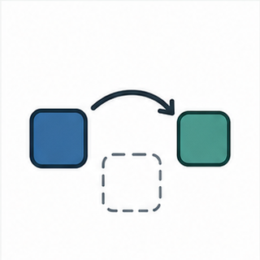
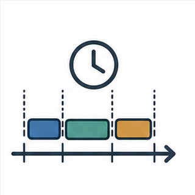

Keys: Left/Right or PageUp/PageDown to move, Home/End to jump, S to toggle slideshow, F for fullscreen, Z for fit/fill, Esc to exit.
Scheduling Policies and Execution Patterns
The scheduler still selects Ready tasks by priority, but configuration decides when the kernel may interrupt a task and how equal-priority tasks share CPU time.
Module Contract
- Compare preemptive scheduling, preemptive scheduling without time slicing, and cooperative scheduling.
- Explain how CPU-bound and I/O-bound tasks change observed behavior.
- Read configUSE_PREEMPTION, configUSE_TIME_SLICING, and configIDLE_SHOULD_YIELD as behavior choices.
- Use Kernel Book timelines and Tutorials 06-08 as scheduling experiments.
01
From State Rules to Policy Rules
Module 03 answered which tasks are eligible. Module 04 answers when the current Running task can be replaced.

EligibilityOnly Ready tasks can be selected by the scheduler.

ReplacementA policy decides whether a newly Ready task can take over immediately.

SharingEqual-priority tasks may or may not rotate on tick boundaries.
Scheduling policy changes replacement rules, not the meaning of task state.
02
Why Policy Is Not Just an Option
The same task functions can produce very different logs when scheduler configuration changes.
Responsiveness
- Preemption can let urgent tasks run as soon as they become Ready.
- Cooperative mode waits for yield or blocking.
- Tick timing can affect equal-priority sharing.
Predictability
- Cooperative code can be easier to trace when tasks follow strict yield rules.
- No time slicing can reduce context switches.
- Equal-priority CPU-bound tasks need explicit design discipline.
Protection
- More asynchronous replacement means more attention to shared resources.
- Critical sections and mutexes matter more once preemption is enabled.
- Poorly chosen priority can hide design bugs.
Scheduler policy is an architecture decision because it changes failure modes.
03
Vocabulary Before Policy Diagrams
These terms appear in the official figures and tutorials.
| Term | Meaning in this module |
|---|
| Preemption | A Ready task with higher priority can replace the currently Running task without waiting for voluntary yield. |
| Time slicing | Equal-priority Ready tasks can rotate on tick boundaries. |
| Cooperative scheduling | A task keeps running until it blocks or explicitly calls taskYIELD(). |
| CPU-bound task | A task that can keep executing without naturally blocking for I/O, time, or synchronization. |
| I/O-bound task | A task that often blocks while waiting for time, data, or an external event. |
| Idle task | The kernel-created lowest-priority task that runs when no application task is Ready. |
A policy word should tell students when a context switch can happen.
04
Policy Selection Macros
The three policies in this module are selected mostly through two FreeRTOSConfig.h macros.
| Scheduling algorithm | configUSE_PREEMPTION | configUSE_TIME_SLICING | Key behavior |
|---|
| Preemptive with time slicing | 1 | 1 | Higher priority preempts; equal priority rotates on ticks. |
| Preemptive without time slicing | 1 | 0 | Higher priority preempts; equal priority does not rotate just because a tick occurred. |
| Cooperative | 0 | Not used | Tasks switch only when the Running task blocks or yields. |
The table is a behavior table, not a config cheat sheet.
05
Generated Comparison Visual
Reading Order
- The first row combines higher-priority preemption with equal-priority rotation.
- The second row keeps preemption but removes tick-based equal-priority rotation.
- The third row waits for yield or block even when a higher-priority task becomes Ready.
- The diagram should be read as three different answers to the same scheduling question.
Generated shared infographic: scheduling_policy_comparison.png
Use this image to separate the three policies before diving into book figures.
06
Fixed Priority Foundation
All three policies in this module still use task priority. The difference is when the Running task can be replaced.
Task becomes Readyby creation, timeout, event, or ISR handoff
→
Priority comparisonhigher priority wins over lower priority
→
Policy ruleimmediate preemption, tick rotation, or voluntary switch
A fixed priority scheduler does not automatically lower or raise task priorities based on how long a task has waited.
Policy modifies switching points; priority still orders Ready tasks.
07
Preemptive Scheduling
In preemptive mode, a higher-priority task becoming Ready can interrupt the currently Running task.
Trigger
- An ISR unblocks a task.
- A delay expires on a tick.
- A queue, semaphore, or notification wakes a task.
Decision
- The newly Ready task has higher priority.
- The current task loses the CPU.
- The scheduler selects the higher-priority task.
Design Effect
- Better responsiveness for urgent work.
- More interleaving around shared state.
- Need for mutexes, critical sections, or lock-free discipline.
Preemption is a responsiveness tool and a concurrency risk multiplier.
08
Book Figure 4.18: Preemption
How to teach it
- Find the instant a higher-priority task becomes Ready.
- Ask why the current task cannot keep running.
- Separate preemption from time slicing; this figure is about priority replacement.
- Connect the figure back to Module 03 Ready and Running vocabulary.
Source: Kernel Book Figure 4.18.
The figure makes preemption visible as a timeline, not a slogan.
09
Time Slicing
Time slicing is about equal-priority Ready tasks. It does not make lower-priority tasks compete with higher-priority tasks.
What time slicing does
- A tick boundary can move execution to another Ready task at the same priority.
- It gives CPU-bound equal-priority tasks a rotation rule.
- It can make logs appear interleaved even when priorities match.
What time slicing does not do
- It does not override priority.
- It does not rescue lower-priority tasks from a higher-priority busy loop.
- It does not guarantee deadline satisfaction.
Time slicing is a same-priority sharing rule.
10
Book Figure 4.19: Equal-Priority Rotation
Reading Focus
- Track only tasks at the same priority first.
- Mark the tick boundaries that create new time slices.
- Then add the higher-priority task and observe preemption separately.
- Use the idle task line to discuss configIDLE_SHOULD_YIELD later.
Source: Kernel Book Figure 4.19.
Equal-priority sharing is easier to understand before adding idle-yield behavior.
11
configIDLE_SHOULD_YIELD
When application tasks run at idle priority, the idle task can either take normal slices or yield to them.
Set to 0
- The idle task remains in the time-sliced rotation.
- Idle-priority application tasks share CPU with idle.
- Useful for understanding the pure time slicing behavior.
Set to 1
- The idle task yields if other idle-priority tasks are Ready.
- Application work at idle priority gets more opportunity.
- The yielded task may not receive the entire remaining slice.
This macro only matters for tasks at idle priority. It is not a general fairness switch.
The idle task is part of scheduling behavior, not just a background detail.
12
Book Figure 4.20: Idle Should Yield
Comparison Prompt
- Compare this directly with Figure 4.19.
- Ask which task yields and why.
- Point out that the replacement is still at idle priority.
- Use it as a reminder that config macros can change visible behavior without changing task code.
Source: Kernel Book Figure 4.20.
Small configuration changes can have visible scheduling consequences.
13
Preemptive Without Time Slicing
When time slicing is disabled, equal-priority CPU-bound tasks do not rotate just because ticks occur.
Still Preemptive
- Higher-priority Ready tasks can still interrupt.
- Priority remains the dominant ordering rule.
- ISR unblocking can still trigger a switch.
No Tick Rotation
- Equal-priority tasks need block or yield points.
- A CPU-bound task can keep running.
- Context switches may be fewer.
Design Risk
- Equal-priority tasks can receive very different CPU time.
- A missing yield can look like starvation.
- Log order becomes less intuitive for beginners.
Turning off time slicing removes one sharing mechanism, not priority preemption.
14
Book Figure 4.21: No Time Slicing Risk
What students should notice
- Equal priority alone does not guarantee equal CPU share.
- Ticks still happen, but they do not rotate equal-priority tasks.
- A running task can continue until it blocks, yields, or is preempted by a higher-priority task.
- This is a policy choice that demands coding discipline.
Source: Kernel Book Figure 4.21.
This figure is a good antidote to the myth that equal priority means fairness.
15
Cooperative Scheduling
In cooperative mode, the scheduler does not preempt the Running task when a higher-priority task becomes Ready.
Switch Points
- Running task blocks.
- Running task calls taskYIELD().
- Scheduler starts before any task is running.
Possible Advantage
- Fewer unexpected interleavings.
- Task boundaries can be easier to reason about.
- Shared data may need fewer protections if rules are strict.
Primary Risk
- A task that forgets to yield can create large latency.
- A higher-priority Ready task can be forced to wait.
- Coding rules become part of the scheduler policy.
Cooperative scheduling moves responsibility from the kernel policy to the task code.
16
Book Figure 4.22: Cooperative Behavior
Reading Focus
- Find when a higher-priority task becomes Ready.
- Ask why it does not run immediately.
- Locate the yield or block point that finally permits a switch.
- Use this figure to contrast readiness with actual execution.
Source: Kernel Book Figure 4.22.
The cooperative scheduler makes Ready and Running visibly different.
17
taskYIELD() in Policy Context
taskYIELD() has different importance depending on the scheduler policy.
| Policy | What taskYIELD() means | Common misunderstanding |
|---|
| Preemptive with time slicing | Voluntary reschedule; ticks may already rotate equal priority tasks. | Assuming yield is required for every switch. |
| Preemptive without time slicing | Important way for equal-priority tasks to share CPU if they do not block. | Assuming equal priority alone creates fairness. |
| Cooperative | One of the only ways to switch while the task remains Ready. | Forgetting that higher priority Ready tasks still wait. |
Yield does not block the task; it creates a scheduling opportunity.
18
Blocking, Yielding, and Preemption
Students need to separate three different reasons that another task may run.
Blocking
- Current task cannot continue until a condition changes.
- Task leaves the Ready set.
- Lower-priority tasks may run if no higher task is Ready.
Yielding
- Current task remains Ready.
- Scheduler is asked to choose again.
- Same task may run again if it is still the best candidate.
Preemption
- A higher-priority task becomes Ready.
- Kernel policy allows immediate replacement.
- Current task is interrupted without voluntary yield.
The same visible effect, another task running, can have three different causes.
19
CPU-Bound and I/O-Bound Tasks
Scheduler policy becomes visible when tasks have different natural blocking behavior.
CPU-bound task
- Can keep executing for a long time.
- Needs explicit delay, yield, or lower priority if it is background work.
- Reveals differences between time slicing and no time slicing.
I/O-bound task
- Often blocks waiting for data, time, or synchronization.
- Naturally gives other tasks CPU opportunities.
- Usually interacts more cleanly with preemptive scheduling.
A task's blocking behavior is as important as its priority.
20
Idle Task Responsibilities
The idle task is a kernel-created task at the lowest priority. It should not be starved forever.
Always present
- Created when the scheduler starts.
- Runs when no higher priority task is Ready.
- Provides evidence of spare CPU time.
Cleanup role
- Frees resources from deleted tasks.
- Requires CPU time to perform cleanup.
- Starving idle can delay cleanup indefinitely.
Hook use
- Optional idle hook can do very low priority work.
- Must not block or suspend itself.
- Must return in a reasonable time.
Seeing the idle task run is often a sign of system slack, not wasted time.
21
Idle Hook Constraints
The idle hook is tempting for background work, but it has strict constraints.
configUSE_IDLE_HOOKvApplicationIdleHook()configIDLE_SHOULD_YIELD
Reasonable use
- Increment a diagnostic counter.
- Enter a low-power preparation path.
- Run tiny nonblocking background checks.
Unsafe use
- Blocking on a queue or semaphore.
- Performing long parsing or printing.
- Preventing idle cleanup from returning.
Idle hook work must be tiny, nonblocking, and easy to review.
22
Configuration Surface
The relevant build choices are few, but their effects are broad.
configUSE_PREEMPTIONControls whether higher-priority Ready tasks can preempt the Running task.
configUSE_TIME_SLICINGControls tick rotation among equal-priority Ready tasks in preemptive mode.
configIDLE_SHOULD_YIELDControls whether idle yields to other idle-priority Ready tasks.
configUSE_IDLE_HOOKEnables application idle hook callback.
configTICK_RATE_HZSets tick frequency, which also shapes time slicing resolution.
configMAX_PRIORITIESDefines the available priority ladder.
A scheduling experiment should change one macro at a time.
23
Tutorial 06: Preemptive With Time Slicing
Tutorial 06 uses configUSE_PREEMPTION = 1 and configUSE_TIME_SLICING = 1.
Before running
- Identify equal-priority tasks.
- Mark CPU-bound loops.
- Predict tick-based alternation.
What to watch
- Interleaving log lines.
- Tick-driven switches.
- Higher priority preemption if present.
Teaching point
- Time slicing is same-priority sharing.
- Preemption is still priority-based.
- The two ideas are independent.
Tutorial 06 is the baseline policy experiment.
24
Tutorial 07: Preemptive Without Time Slicing
Tutorial 07 keeps preemption but disables time slicing.
Before running
- Keep the task code comparable to Tutorial 06.
- Change only configUSE_TIME_SLICING.
- Predict equal-priority behavior.
What to watch
- One equal-priority task may keep running.
- Switches occur on block, yield, or higher priority event.
- Tick interrupts no longer rotate equal tasks.
Teaching point
- No time slicing can reduce switches.
- It can also create unfair CPU distribution.
- Coding rules must compensate.
Tutorial 07 shows why equal priority is not the same as equal CPU time.
25
Tutorial 08: Cooperative Scheduling
Tutorial 08 uses configUSE_PREEMPTION = 0.
Before running
- Find yield or block points.
- Predict where a Ready task must wait.
- Check whether time slicing applies.
What to watch
- Higher-priority Ready task waiting.
- Switch only at taskYIELD() or blocking calls.
- Logs that look stable until one task fails to cooperate.
Teaching point
- Cooperative mode moves scheduling responsibility into application code.
- It can be predictable only when tasks follow strict rules.
- A missing yield is a latency bug.
Tutorial 08 makes voluntary scheduling visible.
26
Experiment Design for Students
A good scheduling experiment isolates one variable.
| Experiment | Hold constant | Change | Expected evidence |
|---|
| Time slicing on/off | Task code and priorities | configUSE_TIME_SLICING | Equal-priority log interleaving changes |
| Preemption on/off | Ready events and priorities | configUSE_PREEMPTION | Higher-priority Ready task either interrupts or waits |
| Yield location | Cooperative mode | taskYIELD() placement | Switch point moves in the timeline |
Do not let students change code, priority, and configuration at the same time.
27
Timeline Reading Practice
Convert logs into scheduling explanations.
Ready
Task A
Task B
Task C
Task B
Task C
Ask first
Did a higher-priority task become Ready?
Ask second
Are the tasks at equal priority?
Ask third
Was the switch caused by tick, block, yield, or ISR?
A timeline without a cause is only a picture.
28
Responsiveness and Fairness Trade-Off
Scheduling policies trade different kinds of behavior; no policy is universally best.
Preemptive with time slicing
- Responsive to higher priority work.
- Fairer among equal-priority CPU-bound tasks.
- More interleaving to review.
Preemptive without time slicing
- Still responsive to higher priority work.
- Fewer equal-priority context switches.
- Needs explicit sharing discipline.
Cooperative
- Predictable when yield rules are strict.
- Less surprise around shared state.
- Can create latency if tasks do not cooperate.
Choose policy by system behavior, not by habit.
29
Priority Map Strategy
Scheduling policy is easier to reason about when the priority map is small and intentional.
| Priority role | Typical task kind | Blocking expectation |
|---|
| High | Urgent event worker or control loop | Short bounded work, periodic or event wait |
| Middle | Sensor processing, communication protocol task | Queue, buffer, or notification wait |
| Low | Logging, statistics, background maintenance | Often blocked, yields to urgent work |
| Idle | Idle task and optional idle-priority application work | Must not block inside idle hook |
A priority map should describe urgency and blocking behavior together.
30
Failure Mode: High-Priority Busy Loop
A high-priority task that never blocks can make the rest of the system look broken.
Symptom
- Lower-priority logs disappear.
- Idle counter stops increasing.
- Timers or communication tasks seem late.
Cause
- The task remains Ready and Running.
- No delay, wait, or yield point exists.
- Priority prevents lower tasks from being selected.
Fix direction
- Add appropriate blocking.
- Lower priority if the work is background.
- Split long work into bounded chunks.
A busy loop is often a scheduling bug disguised as normal C code.
31
Failure Mode: Equal Priority without Sharing
Equal priority does not automatically mean equal CPU share.
When it happens
- configUSE_TIME_SLICING is 0.
- A task does not block or yield.
- Tasks are CPU-bound at the same priority.
Evidence
- One equal-priority task dominates the log.
- Tick count advances but tasks do not rotate.
- Adding yield or blocking changes behavior.
Fairness requires a policy or a coding rule.
32
Failure Mode: Cooperative Latency
In cooperative mode, a higher-priority Ready task can still wait behind a lower-priority Running task.
If the Running task forgets to call taskYIELD() or block, responsiveness depends on how long that task keeps the CPU.
Diagnostic clue
- A high-priority task is Ready but not Running.
- The switch happens only after a yield or block.
- Moving yield changes latency.
Design rule
- Every long loop must have a planned switch point.
- Blocking APIs should express real wait conditions.
- Cooperative mode requires code review discipline.
Cooperative scheduling is only as good as the cooperation rule.
33
Diagnostics View
Scheduling diagnosis needs state, counters, and timestamps.
State
- Ready but not Running
- Blocked duration
- Idle task execution
- Task list snapshot
Timing
- Tick count
- Log timestamps
- Runtime stats
- Trace timeline
Counters
- Idle hook counter
- Context switch trace
- Queue depth or missed event count
- Loop iteration counter
A scheduling issue should be diagnosed before changing priorities.
34
Source Reading: tasks.c and FreeRTOSConfig.h
Read source and configuration together.
In tasks.c
- Ready list selection.
- Yield path.
- Tick processing path.
- Idle task creation and idle hook call point.
In FreeRTOSConfig.h
- configUSE_PREEMPTION.
- configUSE_TIME_SLICING.
- configIDLE_SHOULD_YIELD.
- configUSE_IDLE_HOOK.
The point is not to memorize implementation details, but to connect a macro to a visible execution pattern.
Source reading should explain the timeline.
35
Mini Case: Sensor, Control, Logger
Use this small system to reason about policy choices.
| Task | Priority | Behavior | Scheduling concern |
|---|
| ControlTask | 3 | Periodic control loop | Should not wait behind background work |
| SensorTask | 2 | Periodic sampling and queue send | Should block between samples |
| CommTask | 2 | Protocol processing | Equal priority with SensorTask needs clear sharing rule |
| LoggerTask | 1 | Background output | Should not become CPU-bound at high priority |
A policy discussion is clearer with task roles and blocking behavior visible.
36
Project Boundary Check
Compact activity for class or after-class self study.
Policy toggle
- Run the same task code with time slicing on and off.
- Record which equal-priority task runs after each tick.
- Explain the result using the policy table.
CPU-bound loop
- Add a bounded busy loop to one task.
- Predict which tasks lose CPU time.
- Add delay or yield and compare.
Cooperative rule
- Move taskYIELD() in cooperative mode.
- Measure when another task starts.
- Write one coding rule for long loops.
The lab should change one scheduling cause at a time.
37
Review Questions
Questions that should force mechanism-level answers.
Priority
Can time slicing make a lower-priority task run while a higher-priority task is Ready?
Policy
What remains true when time slicing is disabled but preemption stays enabled?
Cooperation
Why can cooperative scheduling create latency even when a high-priority task is Ready?
If the answer does not mention Ready, Running, priority, or switch point, it is probably too shallow.
38
Bridge to Module 05
Scheduling decides which task runs. Memory management decides whether the objects and stacks that make those tasks possible remain reliable.

HeapDynamic object creation consumes FreeRTOS heap.

StackEach task needs enough stack for its execution path.
DiagnosticsScheduling symptoms often need memory evidence too.
Module 05 shifts from CPU-time behavior to memory reliability.
39
References and Further Reading
References Used
- FreeRTOS Kernel Book, Chapter 4: Task Management, Section 4.8 The Idle Task and the Idle Task Hook.
- FreeRTOS Kernel Book, Chapter 4: Task Management, Section 4.12 Scheduling Algorithms.
- FreeRTOS Kernel Book, Figures 4.18, 4.19, 4.20, 4.21, and 4.22.
- Lab Project FreeRTOS Tutorials 06, 07, and 08.
Further Reading
- FreeRTOSConfig.h reference: configUSE_PREEMPTION, configUSE_TIME_SLICING, configIDLE_SHOULD_YIELD, and configUSE_IDLE_HOOK.
- FreeRTOS API reference: taskYIELD(), vTaskDelay(), vTaskDelayUntil(), and task control APIs.
- Operating systems review: fixed-priority scheduling, round-robin scheduling, and cooperative scheduling.
- Kernel source reading: tasks.c ready list selection, yield path, tick processing, and idle hook path.
References make the policy choices traceable to official material.
40